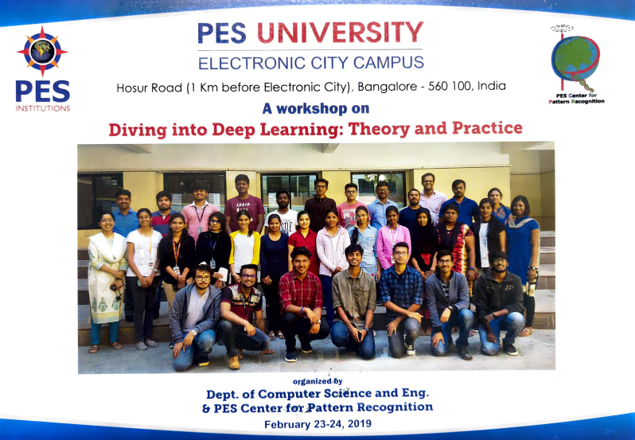

- "MAAYA" event coordinator
- Research talk chief coordinator
- Participating in interactive workshops
- Participating in technical competitions and hackathons
As an event coordinator for our annual, inter-collegiate fest, I wanted to help provide a platform for hidden talent in and beyond college. We conducted an event called "MonoAct" which allowed for any type of individual performances. With a desire to do something new, for the first time in our college's history, I also opened the event up for stand-up comedy. It received a great response because these opportunities just weren't available in Bangalore college fests. We had incredibly talented people show up, perform for a panel of judges, and eventually take home prizes.

As an advocate of community engagement, I devised and directed an in-house research talk delivered by Dr. Gowri Srinivasa (PhD - Carnegie Mellon University) by marshalling a team of 4 under the ACM banner. Several interested juniors stayed back after college to understand how to go about research and the consequent publishing of technical papers, and also directly ask questions to a seasoned professional.

I was fascinated by the world of AI and often participated in hands-on workshops to better understand the nuances of the space. This particular workshop from the PES Center for Pattern Recognition was especially great because we had folks from the industry come in and elaborate on the necessary tools and technologies used by major companies to simplify the development process.

Hackathons played a big role in my development during my undergraduate degree. It was a wonderful opportunity to be creative with limited resources and work with like-minded peers to produce a minimally viable product. I had my fair share of success when it came to these events and it was a great confidence booster because you received validation from industry experts in the field through multiple rounds of evaluation. Understanding its impact on me, I also made sure to organize hackathons for my juniors to aid their development.